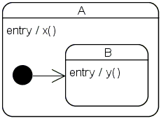
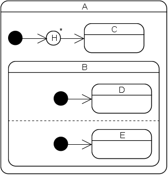
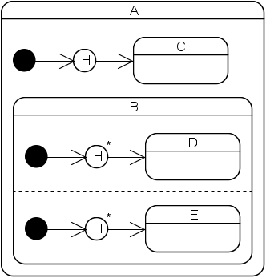
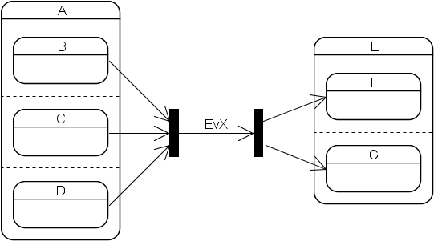
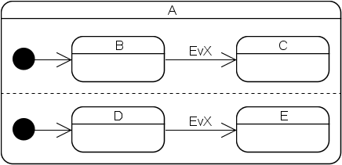
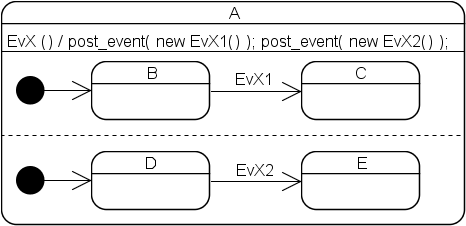
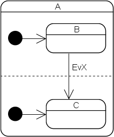

|
|
The Boost Statechart LibraryRationale |
Most of the design decisions made during the development of this library are the result of the following requirements.
Boost.Statechart should ...
Before I started to develop this library I had a look at the following frameworks:
I believe Boost.Statechart satisfies all requirements.
This not yet widely known state machine feature is enabled by the fact that every state is represented by a class. Upon state-entry, an object of the class is constructed and the object is later destructed when the state machine exits the state. Any data that is useful only as long as the machine resides in the state can (and should) thus be a member of the state. This feature paired with the ability to spread a state machine over several translation units makes possible virtually unlimited scalability.
In most existing FSM frameworks the whole state machine runs in one environment (context). That is, all resource handles and variables local to the state machine are stored in one place (normally as members of the class that also derives from some state machine base class). For large state machines this often leads to the class having a huge number of data members most of which are needed only briefly in a tiny part of the machine. The state machine class therefore often becomes a change hotspot what leads to frequent recompilations of the whole state machine.
The FAQ item "What's so cool about state-local storage?" further explains this by comparing the tutorial StopWatch to a behaviorally equivalent version that does not use state-local storage.
State machines that are built at runtime almost always get away with a simple state model (no hierarchical states, no orthogonal states, no entry and exit actions, no history) because the layout is very often computed by an algorithm. On the other hand, machine layouts that are fixed at compile time are almost always designed by humans, who frequently need/want a sophisticated state model in order to keep the complexity at acceptable levels. Dynamically configurable FSM frameworks are therefore often optimized for simple flat machines while incarnations of the static variant tend to offer more features for abstraction.
However, fully-featured dynamic FSM libraries do exist. So, the question is:
One might argue that a dynamically configurable FSM framework is all one ever needs because any state machine can be implemented with it. However, due to its nature such a framework has a number of disadvantages when used to implement static machines:
It is for these reasons, that Boost.Statechart was built from ground up to not support dynamic configurability. However, this does not mean that it's impossible to dynamically shape a machine implemented with this library. For example, guards can be used to make different transitions depending on input only available at runtime. However, such layout changes will always be limited to what can be foreseen before compilation. A somewhat related library, the boost::spirit parser framework, allows for roughly the same runtime configurability.
There is not a single word about error handling in the UML state machine semantics specifications. Moreover, most existing FSM solutions also seem to ignore the issue.
Consider the following state configuration:

Both states define entry actions (x() and y()). Whenever state A becomes
active, a call to x() will immediately be followed by a call to y(). y()
could depend on the side-effects of x(). Therefore, executing y() does not
make sense if x() fails. This is not an esoteric corner case but happens in
every-day state machines all the time. For example, x() could acquire
memory the contents of which is later modified by y(). There is a different
but in terms of error handling equally critical situation in the Tutorial
under Getting state
information out of the machine when Running::~Running()
accesses its outer state Active. Had the entry action of
Active failed and had Running been entered anyway
then Running's exit action would have invoked undefined
behavior. The error handling situation with outer and inner states
resembles the one with base and derived classes: If a base class
constructor fails (by throwing an exception) the construction is aborted,
the derived class constructor is not called and the object never comes to
life.
In most traditional FSM frameworks such an error situation is relatively
easy to tackle as long as the error can be propagated to the state
machine client. In this case a failed action simply propagates a C++
exception into the framework. The framework usually does not catch the
exception so that the state machine client can handle it. Note that, after
doing so, the client can no longer use the state machine object because it
is either in an unknown state or the framework has already reset the state
because of the exception (e.g. with a scope guard). That is, by their
nature, state machines typically only offer basic exception safety.
However, error handling with traditional FSM frameworks becomes
surprisingly cumbersome as soon as a lot of actions can fail and the state
machine itself needs to gracefully handle these errors. Usually, a
failing action (e.g. x()) then posts an appropriate error event and sets a
global error variable to true. Every following action (e.g. y()) first has
to check the error variable before doing anything. After all actions have
completed (by doing nothing!), the previously posted error event has to be
processed what leads to the execution of the remedy action. Please note
that it is not sufficient to simply queue the error event as other events
could still be pending. Instead, the error event has absolute priority and
has to be dealt with immediately. There are slightly less cumbersome
approaches to FSM error handling but these usually necessitate a change of
the statechart layout and thus obscure the normal behavior. No matter what
approach is used, programmers are normally forced to write a lot of code
that deals with errors and most of that code is not devoted to error
handling but to error propagation.
C++ exceptions may be propagated from any action to signal a failure. Depending on how the state machine is configured, such an exception is either immediately propagated to the state machine client or caught and converted into a special event that is dispatched immediately. For more information see the Exception handling chapter in the Tutorial.
An exit action can be implemented by adding a destructor to a state. Due to the nature of destructors, there are two disadvantages to this approach:
state_machine<> object is destructed then
all currently active states are inevitably also destructed. That is,
state machine termination is tied to the destruction of the state machine
objectIn my experience, neither of the above points is usually problem in practice since ...
However, several people have put forward theoretical arguments and real-world scenarios, which show that the exit action to destructor mapping can be a problem and that workarounds are overly cumbersome. That's why two stage exit is now supported.
For asynchronous state machines different applications have rather varied requirements:
By default, asynchronous_state_machine<> subtype
objects are serviced by a fifo_scheduler<> object.
fifo_scheduler<> does not lock or wait in
single-threaded applications and uses boost::thread primitives to do so in
multi-threaded programs. Moreover, a fifo_scheduler<>
object can service an arbitrary number of
asynchronous_state_machine<> subtype objects. Under the
hood, fifo_scheduler<> is just a thin wrapper around an
object of its FifoWorker template parameter (which manages the
queue and ensures thread safety) and a
processor_container<> (which manages the lifetime of the
state machines).
The UML standard mandates that an event not triggering a reaction in a
state machine should be silently discarded. Since a
fifo_scheduler<> object is itself also a state machine,
events destined to no longer existing
asynchronous_state_machine<> subtype objects are also
silently discarded. This is enabled by the fact that
asynchronous_state_machine<> subtype objects cannot be
constructed or destructed directly. Instead, this must be done through
fifo_scheduler<>::create_processor<>() and
fifo_scheduler<>::destroy_processor()
(processor refers to the fact that
fifo_scheduler<> can only host
event_processor<> subtype objects;
asynchronous_state_machine<> is just one way to
implement such a processor). Moreover,
create_processor<>() only returns a
processor_handle object. This must henceforth be used to
initiate, queue events for, terminate and destroy the state machine through
the scheduler.
If a user needs to customize the scheduler behavior she can do so by
instantiating fifo_scheduler<> with her own class
modeling the FifoWorker concept. I considered a much more
generic design where locking and waiting is implemented in a policy but I
have so far failed to come up with a clean and simple interface for it.
Especially the waiting is a bit difficult to model as some platforms have
condition variables, others have events and yet others don't have any
notion of waiting whatsoever (they instead loop until a new event arrives,
presumably via an ISR). Given the relatively few lines of code required to
implement a custom FifoWorker type and the fact that almost
all applications will implement at most one such class, it does not seem to
be worthwhile anyway. Applications requiring a less or more sophisticated
event processor lifetime management can customize the behavior at a more
coarse level, by using a custom Scheduler type. This is
currently also true for applications requiring non-FIFO queuing schemes.
However, Boost.Statechart will probably provide a
priority_scheduler in the future so that custom schedulers
need to be implemented only in rare cases.
All user-supplied functions (react member functions,
entry-, exit- and transition-actions) must be class members. The reasons
for this are as follows:
react member functions and transition actions often
access state-local data. So, it is most natural to implement these
functions as members of the class the data of which the functions will
operate on anywayUML junction points are not supported because arbitrarily complex guard
expressions can easily be implemented with
custom_reaction<>s.
Currently there is no direct support for this UML element because its
behavior can often be implemented with
custom_reaction<>s. In rare cases this is not possible,
namely when a choice point happens to be the initial state. Then, the
behavior can easily be implemented as follows:
struct make_choice : sc::event< make_choice > {};
// universal choice point base class template
template< class MostDerived, class Context >
struct choice_point : sc::state< MostDerived, Context >
{
typedef sc::state< MostDerived, Context > base_type;
typedef typename base_type::my_context my_context;
typedef choice_point my_base;
choice_point( my_context ctx ) : base_type( ctx )
{
this->post_event( boost::intrusive_ptr< make_choice >(
new make_choice() ) );
}
};
// ...
struct MyChoicePoint;
struct Machine : sc::state_machine< Machine, MyChoicePoint > {};
struct Dest1 : sc::simple_state< Dest1, Machine > {};
struct Dest2 : sc::simple_state< Dest2, Machine > {};
struct Dest3 : sc::simple_state< Dest3, Machine > {};
struct MyChoicePoint : choice_point< MyChoicePoint, Machine >
{
MyChoicePoint( my_context ctx ) : my_base( ctx ) {}
sc::result react( const make_choice & )
{
if ( /* ... */ )
{
return transit< Dest1 >();
}
else if ( /* ... */ )
{
return transit< Dest2 >();
}
else
{
return transit< Dest3 >();
}
}
};
choice_point<> is not currently part of
Boost.Statechart, mainly because I fear that beginners could use it in
places where they would be better off with
custom_reaction<>. If the demand is high enough I will
add it to the library.
Deep history of states with orthogonal regions is currently not supported:

Attempts to implement this statechart will lead to a compile-time error because B has orthogonal regions and its direct or indirect outer state contains a deep history pseudo state. In other words, a state containing a deep history pseudo state must not have any direct or indirect inner states which themselves have orthogonal regions. This limitation stems from the fact that full deep history support would be more complicated to implement and would consume more resources than the currently implemented limited deep history support. Moreover, full deep history behavior can easily be implemented with shallow history:

Of course, this only works if C, D, E or any of their direct or indirect inner states do not have orthogonal regions. If not so then this pattern has to be applied recursively.

Synchronization bars are not supported, that is, a transition always originates at exactly one state and always ends at exactly one state. Join bars are sometimes useful but their behavior can easily be emulated with guards. The support of fork bars would make the implementation much more complex and they are only needed rarely.
The Boost.Statechart event dispatch algorithm is different to the one specified in David Harel's original paper and in the UML standard. Both mandate that each event is dispatched to all orthogonal regions of a state machine. Example:

Here the Harel/UML dispatch algorithm specifies that the machine must transition from (B,D) to (C,E) when an EvX event is processed. Because of the subtleties that Harel describes in chapter 7 of his paper, an implementation of this algorithm is not only quite complex but also much slower than the simplified version employed by Boost.Statechart, which stops searching for reactions as soon as it has found one suitable for the current event. That is, had the example been implemented with this library, the machine would have transitioned non-deterministically from (B,D) to either (C,D) or (B,E). This version was chosen because, in my experience, in real-world machines different orthogonal regions often do not specify transitions for the same events. For the rare cases when they do, the UML behavior can easily be emulated as follows:


Transitions across orthogonal regions are currently flagged with an error at compile time (the UML specifications explicitly allow them while Harel does not mention them at all). I decided to not support them because I have erroneously tried to implement such a transition several times but have never come across a situation where it would make any sense. If you need to make such transitions, please do let me know!

Revised 03 December, 2006
Copyright © 2003-2006 Andreas Huber Dönni
Distributed under the Boost Software License, Version 1.0. (See accompanying file LICENSE_1_0.txt or copy at http://www.boost.org/LICENSE_1_0.txt)